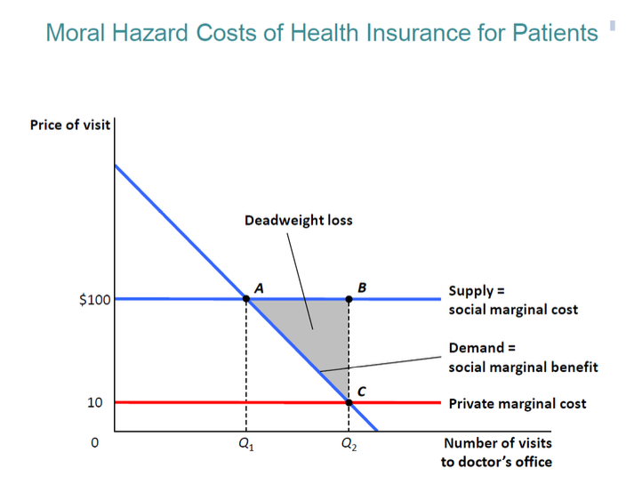

7.2 — Insurance Economics
Chapter 7: Health Economics — Theory, Systems, and the Cost of Aging
Insurance: The Math of Fear
To understand insurance, we must understand how people calculate fear using expected utility theory. Imagine a person who earns a total salary of $W$. Every day, they have a small percentage chance ($p$) of getting hit by a car. If they do get hit, the hospital will cost them a massive amount of money ($d$).
The Contract: You pay the company a small fee ($t$) every single month. If you get hurt, they give you a giant payout of cash ($b$).
The Happiness Equation (Expected Utility):
$E(U) = p \cdot U(W - t - d + b) + (1 - p) \cdot U(W - t)$
Because people are terrified of losing everything, their happiness curve curves downwards (we call this risk-averse).
The "Perfectly Fair" Insurance:
Insurance companies obviously want profit: $EP = t - p \cdot b$
However, if hundreds of companies compete, prices drop until their profit hits zero ($EP = 0$). This creates the ultimate equation:
$b = \frac{t}{p}$
We call this actuarially fair insurance — the price you pay exactly equals the mathematical chance of you needing the money. It is a perfectly balanced game.
Why Do People Buy (or Refuse) Insurance?
Every day, we face unknown risks that can destroy our wallets. Do you fight the risk alone, or do you pay a company to protect you?
Scared People Will Overpay
Because humans hate uncertainty (risk-averse), they will happily pay a price that is higher than the fair math chance. The extra money they are willing to waste just to sleep safely at night is called the risk premium.
Greedy Companies Destroy the Market
In reality, insurance companies add massive extra fees (loading costs) to pay for their offices, marketing, and profit. If these secret fees get too high, healthy people realize the deal is bad and they simply leave the system. When healthy people quit, the market collapses.
Adverse Selection — The Death Spiral
Adverse selection is the greatest nightmare in insurance. It happens when only sick people try to buy insurance, because they secretly know they need it, leaving the healthy people behind.
The "Death Spiral" Effect:
- The company creates a single, average price for everyone.
- The healthy people say: "This is too expensive! I never get sick!" and they cancel their insurance. The sick people say: "What a cheap deal!" and they stay.
- Because only sick people are left, the company starts losing massive amounts of money, so they raise the price.
- Because the price is higher, the "slightly healthy" people now get angry and quit too.
- This cycle repeats violently until the system collapses entirely. Insurance becomes impossible to buy for everyone.
Akerlof (1970), AER | Rothschild & Stiglitz (1976), QJE
Moral Hazard — How Protection Makes Us Reckless
Once you are completely protected by an insurance card, your brain naturally stops caring about costs. This creates terrifying waste called moral hazard.
Ex-Ante (Before you are sick)
Because you know the hospital is free, you stop protecting yourself. You stop exercising, you eat terrible food, and you do dangerous sports. Your logic is simple: "If I get hurt, the company pays for the surgery, so why be careful?"
Ex-Post (After you are sick)
Because the real hospital bill is hidden from you, you demand the most expensive treatments. If a normal bandage costs $10 but a magical laser bandage costs $5,000, you will demand the laser, because your insurance card means you pay zero.

Without insurance, you would only buy a normal amount of healthcare ($Q_1$). With insurance, your price drops to almost zero, so you wildly over-consume ($Q_2$). This giant gap of wasted, useless spending creates a huge deadweight loss triangle for society.
Real World Proof: RAND and the Czech Republic
Two famous experiments prove exactly how much humans waste money when healthcare is free:
🇺🇸 RAND Health Insurance Experiment (USA)
In the 1970s, the US government gave random people different insurance cards. Some people paid 0% at the hospital, while others had to pay 95% of the bill.
The Shocking Result: People who had 0% free healthcare went to the doctor 30% more often. But amazingly, their bodies were no healthier than the people who paid 95%! They simply wasted money on useless visits. (The only people who actually got healthier were the very poor and very sick).
🇨🇿 Czech Hospital Fee (2008)
In 2008, the Czech government created a very tiny fee: 90 CZK (about €3.50) just to enter the emergency room.
The Result:
- Fake, useless emergency visits immediately crushed by 41% in one year.
- Old people stopped visiting their local doctor just to chat.
- Real, serious hospital stays did not change at all — proving that people still went to the hospital when they were truly dying.
~30%
Extra hospital visits when it's fully free
Zero
Extra health gained for most normal people
−41%
Emergency visits after a €3.50 fee
How To Pay The Doctor
How the government decides to pay doctors will completely change how doctors behave. There are three main rules for paying a doctor:
1. Pay Per Action (Fee-for-Service)
The doctor gets paid every time they touch you. If they give you 10 useless blood tests, they get rich. This strongly encourages doctors to over-treat patients and waste government money.
2. Fixed Salary (Capitation)
The doctor gets paid a flat monthly salary per patient, no matter what they do. Because the doctor gets the same money whether they work hard or sleep all day, they will actively ignore sick people. This causes under-treatment.
3. The Modern Solution (DRG System)
The hospital gets a fixed block of money for your exact disease (e.g., $5,000 for a broken arm). If the doctor fixes you for $3,000, the hospital keeps the $2,000 profit. If the doctor wastes $10,000 fixing your arm, the hospital loses money. This forces everyone to be fast and efficient.
Chapter 7.2 — Insurance Economics:
- Perfect Insurance: $b = t/p$. Because humans hate risk, they usually pay the company extra money (the risk premium) just to feel safe.
- Adverse selection: Only the sickest citizens buy insurance. Healthy people leave. The system becomes so expensive that it crashes (the death spiral). Often requires the government to force everyone to buy it by law.
- Moral hazard: When the hospital is 100% free, people do stupid things and demand luxury treatments, creating massive financial waste (deadweight loss).
- RAND & Czech data: A tiny fee (like €3.50) instantly stops people from treating the emergency room like a social club.
- Paying doctors: Fee-for-Service makes them do too much. Fixed salaries make them do too little. DRG (fixed money per disease) is the perfect balance.